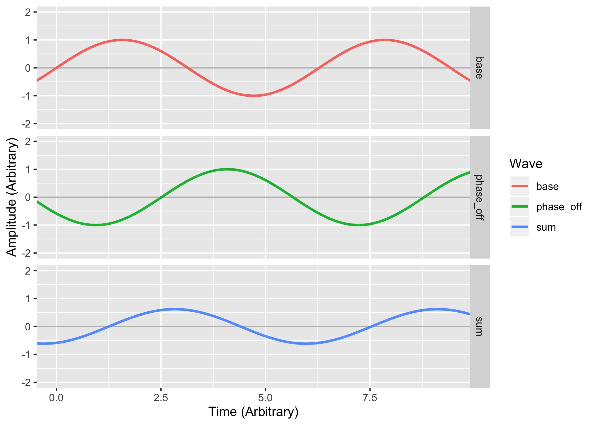
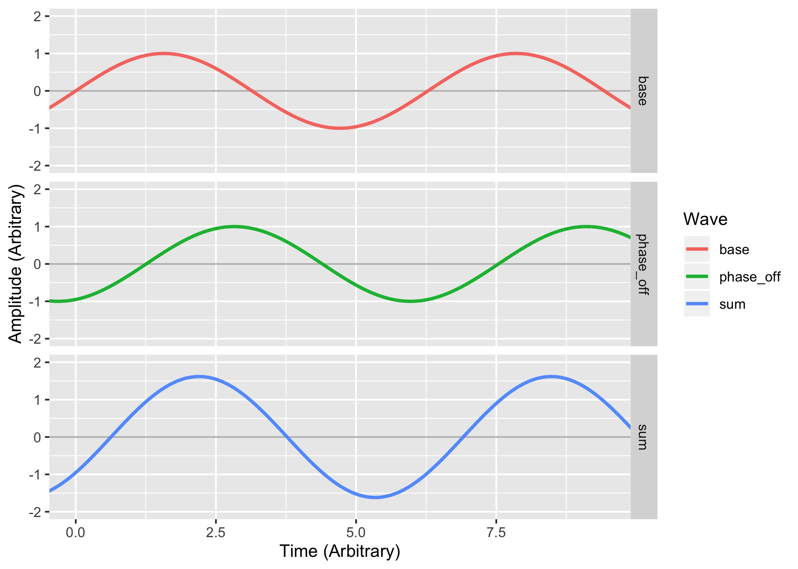
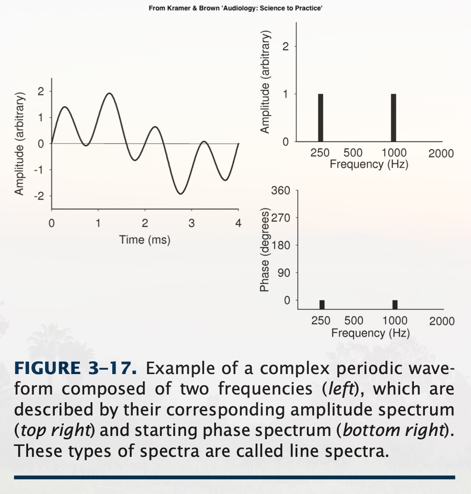
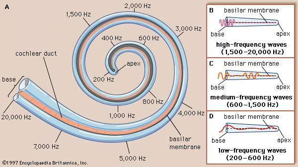

What are complex sounds?
What is interference?
What is ‘phase’?
How do we visualize and analyze complex sounds?
Amplitude, Duration, Period, Frequency and Wavelength
… and we ended with a sound that’s… not quite like the others
Sounds which have just one frequency component
These are relatively rare in nature!
Most actual sources of sound generate multiple frequencies naturally
Because we’re surrounded by noise!
Noise arriving at the ear is additive
We only hear one waveform per ear, no matter the source(s)
Sounds which are made up of more than one component frequency
Also, aperiodic sounds, which aren’t naturally derived from specific frequencies

By making multiple sounds at the same time!
Or, mathematically, using addition!


Multiple signals are ‘interfering’ with one another when they collide and affect one another
Affect means just that! Any effect at all!
There are two main kinds of interference in audio
Constructive Interference
Destructive Interference
When multiple waves combine in such a way that they become stronger
When peaks add together with peaks
When multiple waves combine in such a way that they become weaker
When peaks add together with valleys


Those sounds had the same frequency
The same amplitude
… and the same duration
One pair combined constructively, and the other pair destructively
The point of the cycle in which a sound ‘starts’
The ‘orientation’ of the wave in time
We measure phase in Degrees (°)
0° is the base, and is the same as 360°
180° is the exact opposite phase from 0°

Sounds that are ‘in phase’ experience constructive interference
Sounds that are ‘out of phase’ experience destructive interference




It doesn’t matter what phase a sound starts on to us
But it’s crucial when making complex sounds!

Using spectra or spectrograms
Using a Fourier Transform lets us understand the component frequencies and their phases
‘This signal is made up of which component signals?’
If you haven’t heard about spectrograms and spectra before, watch this video starting at 12:30
https://www.youtube.com/watch?v=59NqlXr59_c
This goes into a bit more detail (and allows me to be kind to the folks who’ve had 110 and/or 112)
https://www.youtube.com/watch?v=spUNpyF58BY
“But what is the Fourier Transform? A visual introduction” by 3Blue1Brown


… and their power
Phase is also recoverable using FFTs
… but we want time!






About Phase
Phase Cancellation
… and visualizing complex waves